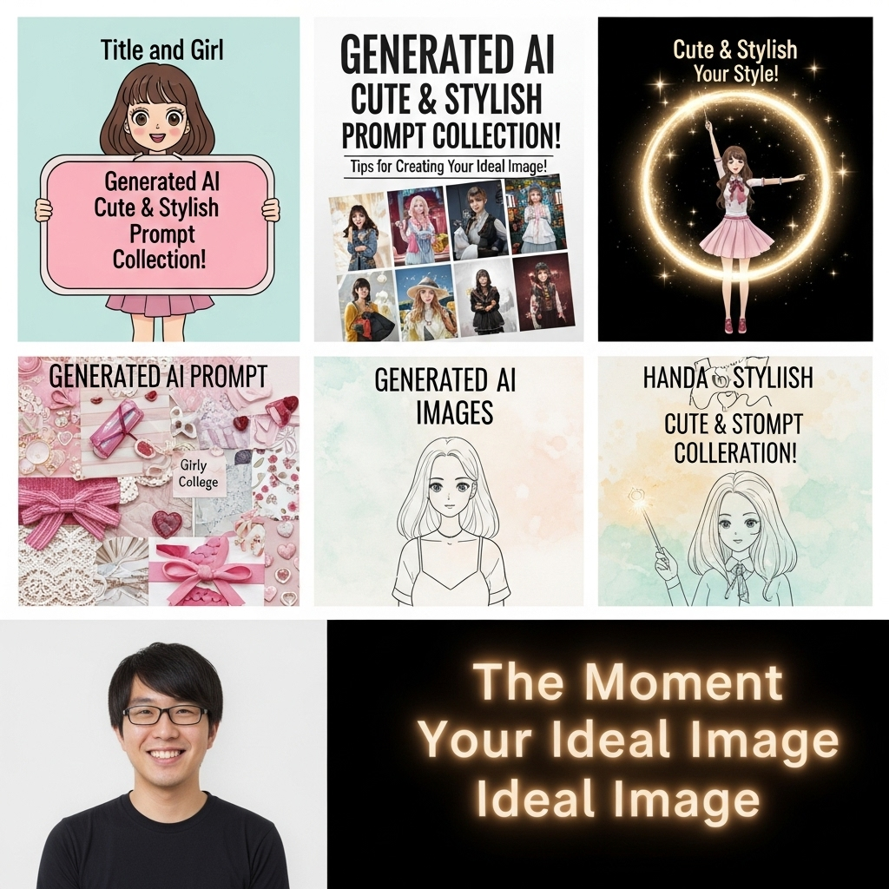
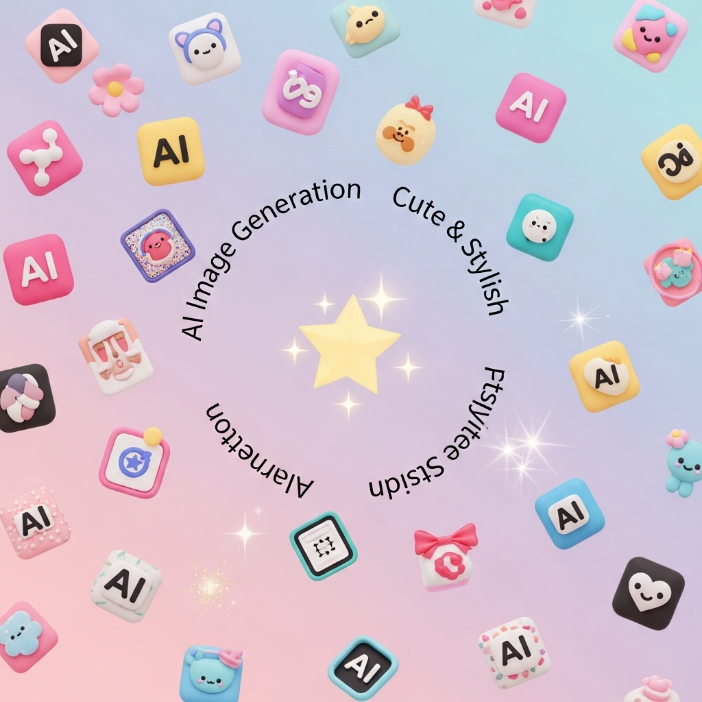
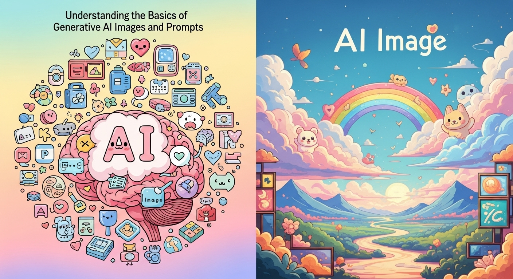
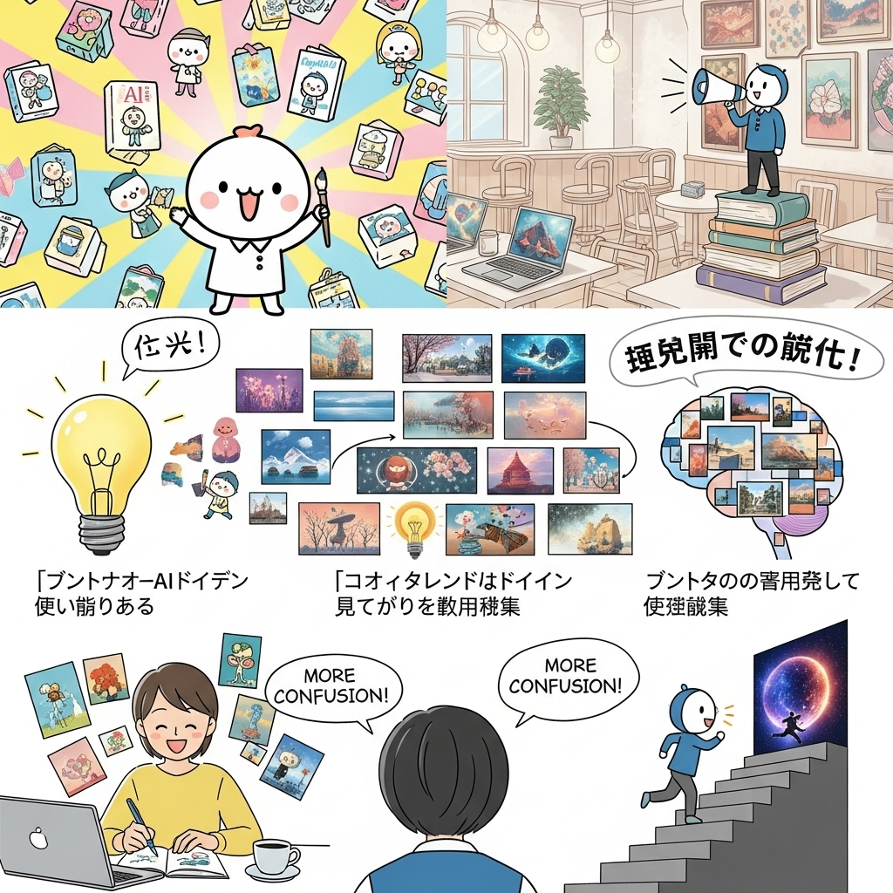
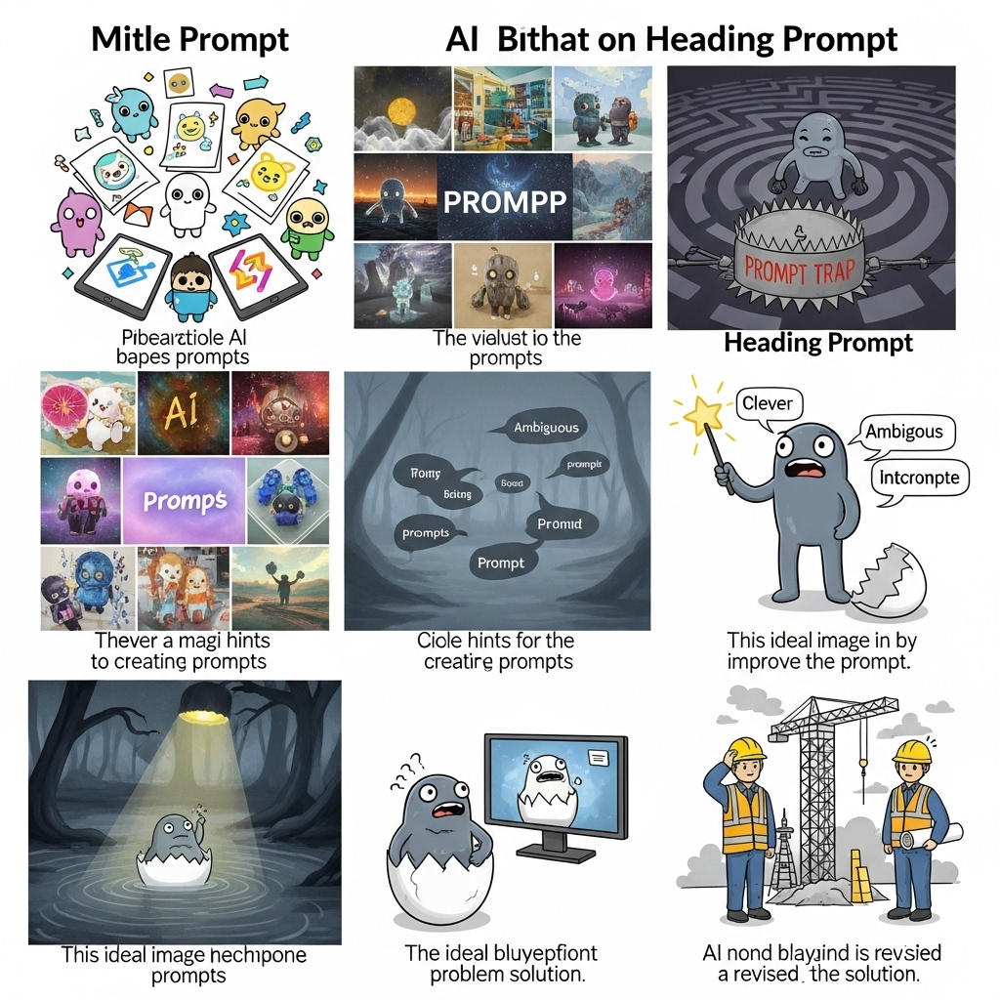

【生成AI画像】可愛い＆おしゃれプロンプト集！理想の画像を生成するコツ

導入

近年、私たちのクリエイティブな世界に革命をもたらしている「生成AI画像」の技術。まるで魔法のように、頭の中に描いたイメージが、瞬く間に美しいビジュアルとして目の前に現れるようになりました。SNSを賑わせる魅力的なイラストや、広告で見かける洗練されたビジュアルの数々も、実はこのAIの力によって生み出されていることが少なくありません。
しかし、この素晴らしい技術を最大限に活用するためには、AIに「何を」「どのように」描いてほしいかを正確に伝える「プロンプト」が非常に重要になります。プロンプトは、AIに対する私たちの願いを伝える「呪文」のようなもの。この呪文が具体的で魅力的であればあるほど、AIは私たちの理想とする画像を生成してくれるのです。
「でも、どうやって理想のプロンプトを作ればいいの？」
「可愛いキャラクターや、おしゃれな風景をAIに描いてもらいたいけど、なかなか思った通りの画像にならない…」
そう感じている方もいらっしゃるかもしれませんね。AI画像生成は、初めての方にとっては少しハードルが高く感じられることもあるでしょう。抽象的な言葉ではAIに意図が伝わらず、具体的な言葉を選ぼうとすると、今度はどんな言葉を使えばいいのか迷ってしまう。そんなお悩みを抱える方々のために、この記事は生まれました。
本記事では、生成AI画像とプロンプトの基本から、思わず「可愛い！」と声が出てしまうようなキャラクターや動物、そして「おしゃれ！」と感嘆するようなスタイリッシュな風景や幻想的な世界を生成するための具体的なプロンプト例まで、幅広くご紹介していきます。さらに、プロンプト作成で陥りやすい落とし穴とその対策、理想の画像を追求するための応用テクニック、そしておすすめのAIツールまで、皆さんの創作活動をサポートする情報が満載です。
この記事を読み終える頃には、あなたもきっと、AIをまるで長年の相棒のように操り、頭の中のイメージを自在に形にできるようになっているはずです。さあ、AIと一緒に、あなただけの素敵なアートの世界を旅してみませんか？心を込めて、皆さんのクリエイティブな挑戦を応援いたします。
生成AI画像とプロンプトの基本を理解しよう

AI画像生成の世界へようこそ。この章では、まずAI画像生成とは何か、そして理想の画像を生成するために不可欠な「プロンプト」がどのような役割を果たすのか、その基本的な概念を優しく丁寧に解説していきます。この基礎をしっかりと理解することで、今後のプロンプト作成がよりスムーズに、そして楽しくなることでしょう。
基本１．AI画像生成とは？その魅力と可能性
AI画像生成とは、人工知能（AI）がテキストの指示（プロンプト）に基づいて、全く新しい画像を自動的に作り出す技術のことです。まるで、優秀な絵描きさんが私たちの言葉を理解し、その場で絵を描いてくれるようなものだと想像してみてください。この技術は、深層学習というAIの分野が大きく進化したことで、近年目覚ましい発展を遂げました。
では、このAI画像生成にはどのような魅力と可能性が秘められているのでしょうか？
-
創造性の解放と表現の拡張:
絵心がなくても、デザインスキルがなくても、誰もが頭の中にあるアイデアを具体的なビジュアルとして表現できるようになりました。これまで専門家でなければ難しかったイラストやアート作品が、テキスト入力だけで生み出せるのです。これは、個人の創造性を無限に広げ、表現の幅を飛躍的に拡大するものです。例えば、「満月の夜に、森の奥で踊る妖精たち」といった抽象的なイメージも、AIは驚くほど具体的に、そして美しく形にしてくれます。 -
時間とコストの劇的な削減:
従来、一枚のイラストやデザインを作成するには、プロのデザイナーに依頼するか、自身で多くの時間をかけて制作する必要がありました。しかし、AI画像生成ツールを使えば、数秒から数分で複数の画像を生成できます。これにより、デザインの検討段階でのアイデア出しや、SNS投稿用の画像作成、プレゼンテーション資料のビジュアル強化などが、圧倒的なスピードと低コストで実現可能になりました。もしプロに依頼すれば数万円かかるようなイラストも、AIを使えば月額数百円から数千円の利用料で無限に試すことができます。 -
多様な分野での活用:
AI画像生成の可能性は、私たちの想像を超えて広がっています。- SNSやブログのコンテンツ作成: 投稿に目を引くオリジナル画像を添えることで、フォロワーのエンゲージメントを高めることができます。
- マーケティング・広告: ターゲット層に響くビジュアルを迅速に生成し、効果的なキャンペーンを展開できます。
- ゲーム・アニメ制作: キャラクターデザインの初期案や背景アートのコンセプト作成に活用し、制作プロセスを効率化します。
- ファッションデザイン: 新しいデザインのアイデアを視覚化し、トレンドを素早くキャッチアップできます。
- 建築・インテリアデザイン: 顧客への提案資料として、リアルな内装や外観のイメージを生成できます。
- 教育: 学習資料のビジュアルを豊かにし、理解度を深める手助けとなります。
- 個人利用: 趣味のアート制作、オリジナルの壁紙作成、友人へのプレゼントなど、無限の楽しみ方ができます。
AI画像生成は、単なるツールの進化に留まらず、私たちの生活やビジネス、そしてアートのあり方そのものを変えつつあります。この技術の進化はまだ始まったばかり。今後も新たな機能や表現方法が次々と登場し、私たちのクリエイティブな可能性をさらに広げてくれることでしょう。
基本２．プロンプトとは？AIへの「呪文」の役割
AI画像生成において、「プロンプト」という言葉は非常に重要なキーワードです。では、プロンプトとは一体何なのでしょうか？
プロンプトとは、簡単に言えば「AIに対する指示文」のことです。私たちがAIに「こんな画像を作ってほしい」と伝えるための、言葉やフレーズの集まりを指します。まるで、優秀な画家さんに絵を描いてもらう際に、私たちが「こういうテーマで、こんな色使いで、こんな雰囲気の絵を描いてください」と具体的に要望を伝えるように、AIに対しても言葉で指示を出すのです。
このプロンプトは、しばしば「呪文」と表現されます。なぜなら、その言葉一つ一つが、AIが画像を生成する際の魔法の言葉となり、最終的な画像の質や内容を大きく左右するからです。例えば、「猫」と一言だけプロンプトに入力した場合、AIは一般的な猫の画像を生成するかもしれません。しかし、「ふわふわの毛並みを持つ、大きな青い瞳の子猫が、日当たりの良い窓辺で眠っている、水彩画風のイラスト」と具体的にプロンプトを入力すれば、AIはその「呪文」を忠実に解釈し、より詳細でイメージに近い画像を生成してくれるのです。
良いプロンプトは、AIの無限の創造性を引き出し、私たちの頭の中にある漠然としたイメージを、驚くほど具体的に、そして魅力的なビジュアルとして具現化する力を持っています。逆に、プロンプトが曖昧だったり、情報が不足していたりすると、AIは何をどう描けばいいか分からず、意図しない画像が生成されてしまうこともあります。
プロンプトには、主に以下のような要素が含まれます。
- 主題（Subject）: 何を描くのか？（例: 女の子、猫、森、宇宙船）
- 特徴（Details）: 主題の具体的な描写（例: 笑顔、ふわふわ、青い瞳、光沢のある）
- スタイル・画風（Style/Art Medium）: どのような雰囲気や手法で描くのか？（例: アニメ風、油絵、水彩画、サイバーパンク）
- 背景・環境（Background/Environment）: どこを舞台にするのか？（例: 花畑、都会の夜景、幻想的な森）
- 色（Color）: 全体的な色調や特定の色の指定（例: パステルカラー、モノクロ、鮮やかな赤）
- 構図・アングル（Composition/Angle）: どのような視点から描くのか？（例: クローズアップ、広角、俯瞰）
- 照明（Lighting）: 光の当たり方や種類（例: 夕焼け、ネオン、柔らかい光）
- 感情・雰囲気（Emotion/Atmosphere）: 画像から伝わる感情やムード（例: 幸せ、神秘的、落ち着いた）
これらの要素を適切に組み合わせ、AIに明確に伝えることが、理想の画像を生成するための鍵となります。プロンプトは、AIとの対話の入り口であり、私たちのクリエイティブな意図をAIに理解してもらうための最も重要な手段なのです。
基本３．なぜ生成AI画像プロンプト集が必要なのか？
AI画像生成の基本とプロンプトの重要性を理解したところで、「なぜ、わざわざプロンプト集が必要なのだろう？」と感じる方もいらっしゃるかもしれません。自分で自由に言葉を組み合わせれば良いのでは、と思うのも当然です。しかし、実はプロンプト集には、皆さんのAI画像生成の旅をより豊かに、そして効率的にする、たくさんのメリットが詰まっています。
-
初心者にとっての羅針盤:
AI画像生成を始めたばかりの頃は、どんな言葉を使えばAIが意図を正確に理解してくれるのか、どんな単語が効果的なのか、全く見当がつかないものです。例えば、「可愛い女の子」と入力しても、AIは様々な「可愛い」を解釈するため、なかなか理想の画像には辿り着けません。プロンプト集は、そんな時に「こういう言葉を使えば、こんな可愛い画像が作れるんだ！」という具体的なヒントを与えてくれる、まさに羅針盤のような存在です。成功例を見ることで、プロンプト作成のコツを掴むことができます。 -
試行錯誤の時間を大幅に短縮:
プロンプト作成は、ある意味で試行錯誤の連続です。一つ一つ言葉を変え、生成結果を確認し、また調整する、という作業は、時に時間と労力を要します。特に、特定のイメージ（例えば「ファンタジー風の美しい城」）を求めている場合、ゼロから最適なプロンプトを探し出すのは大変です。プロンプト集があれば、既に効果が実証されているプロンプトを参考にできるため、無駄な試行錯誤を減らし、理想の画像にたどり着くまでの時間を大幅に短縮できます。 -
アイデアの枯渇を防ぎ、新たな発見を促す:
「今日はどんな画像を作ろうかな？」と考える時、アイデアが浮かばないこともありますよね。プロンプト集は、そんな時にクリエイティブな刺激を与えてくれます。自分では思いつかなかったような単語の組み合わせや、特定の画風の指定方法など、新しい表現のヒントがたくさん見つかるでしょう。プロンプト集を眺めているうちに、「このプロンプトを少し変えたら、こんな面白い画像ができるかも？」といった、新たな創作意欲が湧いてくることも少なくありません。 -
高品質な画像を安定して生成する手助け:
AIは、同じ「可愛い」という言葉でも、文脈や他の単語との組み合わせによって、生成する画像の質や雰囲気を大きく変えます。プロンプト集に掲載されているプロンプトは、多くの場合、実際に高品質な画像を生成できた実績のあるものです。これらを活用することで、初心者の方でも比較的安定して、見栄えの良い画像を生成できるようになります。結果として、SNSでの注目度アップや、個人的な作品のクオリティ向上にも繋がるでしょう。 -
プロンプトの語彙力と表現力を向上させる学習ツール:
プロンプト集は、単にコピペするだけでなく、学習ツールとしても非常に有効です。掲載されているプロンプトを分析し、「なぜこの言葉が使われているのか」「この表現がどのような効果を生んでいるのか」を考えることで、自分自身のプロンプト作成スキルが向上します。様々なプロンプトに触れることで、AIが理解しやすい言葉遣いや、効果的な表現方法を自然と身につけることができるのです。
このように、生成AI画像プロンプト集は、AI画像生成を始めたばかりの方から、さらに表現の幅を広げたいと考えている方まで、すべての人にとって非常に価値のあるリソースとなります。この後ご紹介するプロンプト集を、ぜひ皆さんのクリエイティブな活動に役立ててみてください。
【実践】可愛い＆おしゃれな生成AI画像プロンプト集
さあ、いよいよ実践の時間です！この章では、皆さんがAI画像生成で「可愛い」と「おしゃれ」を表現するための具体的なプロンプト例を、様々なカテゴリに分けてご紹介します。ただプロンプトを提示するだけでなく、それぞれのプロンプトがどのような意図を持ち、どのような画像を生成するのか、そのポイントも詳しく解説していきます。これらの例を参考に、あなただけの理想の画像を生成する「呪文」を紡ぎ出してみましょう。
実践１．「可愛い」を表現するプロンプト例：キャラクター・人物編
「可愛い」という感情は、人それぞれ感じ方が異なりますが、AIに伝える際には、具体的な要素を盛り込むことが重要です。ここでは、特に人物やキャラクターを「可愛らしく」描くためのプロンプト例をご紹介します。
ポイント：
- 年齢層の指定: 「幼い」「少女」「子供」といった言葉で、ターゲットとする年齢層を明確にします。
- 表情と感情: 「笑顔」「無邪気な」「困り顔」など、具体的な表情や感情を指示します。
- 身体的特徴: 「大きな瞳」「小さな鼻」「ふっくらした頬」「細い手足」など、可愛らしさを強調する身体的特徴を盛り込みます。
- 服装とアクセサリー: 「フリル」「リボン」「オーバーサイズ」「動物モチーフ」など、可愛らしい印象を与えるアイテムを指定します。
- 色使い: 「パステルカラー」「シャーベットトーン」「淡い色」など、優しい色合いを指示します。
- 画風: 「アニメ調」「デフォルメ」「水彩画風」など、可愛らしさを引き立てる画風を指定します。
プロンプト例１：無邪気な笑顔の少女
A cute little girl, happy smile, big sparkling eyes, rosy cheeks, wearing a pastel pink ruffled dress, holding a fluffy teddy bear, soft natural light, anime style illustration, bright and cheerful atmosphere.
(可愛い幼い少女、幸せな笑顔、輝く大きな瞳、バラ色の頬、パステルピンクのフリルドレスを着ている、ふわふわのテディベアを抱いている、柔らかい自然光、アニメ風イラスト、明るく陽気な雰囲気。)解説: 「little girl」「happy smile」「big sparkling eyes」「rosy cheeks」といった言葉で、少女の可愛らしい特徴を具体的に指定しています。「pastel pink ruffled dress」「fluffy teddy bear」で、可愛らしさを強調するアイテムを加え、全体を「anime style illustration」「bright and cheerful atmosphere」でまとめ、親しみやすく明るい印象の画像を狙います。
プロンプト例２：夢見るような表情のファンタジー少女
A dreamy young girl, slightly shy expression, large innocent eyes, long wavy blonde hair adorned with small flowers, wearing a flowing white lace dress, sitting in a magical forest with glowing mushrooms and fireflies, soft ethereal light, fantasy art, whimsical and gentle.
(夢見るような若い少女、少し恥ずかしそうな表情、大きな無垢な瞳、小さな花で飾られた長いウェーブのかかったブロンドの髪、流れるような白いレースのドレスを着ている、光るキノコとホタルがいる魔法の森に座っている、柔らかい幻想的な光、ファンタジーアート、気まぐれで優しい。)解説: 「dreamy young girl」「shy expression」「innocent eyes」で、内面的な可愛らしさを表現。「long wavy blonde hair adorned with small flowers」「flowing white lace dress」で、外見の美しさと可愛らしさを両立させます。「magical forest with glowing mushrooms and fireflies」「soft ethereal light」「fantasy art」で、幻想的で魅力的な世界観を構築し、少女の可愛らしさを引き立てます。
プロンプト例３：デフォルメされた動物コスチュームの子供
A super deformed child character, wearing a fluffy panda costume, big round head, sparkling kawaii eyes, slightly open mouth, holding a bamboo shoot, simple pastel background, chibi art style, playful and adorable.
(超デフォルメされた子供のキャラクター、ふわふわのパンダのコスチュームを着ている、大きな丸い頭、キラキラしたカワイイ瞳、少し開いた口、竹の葉を持っている、シンプルなパステル背景、ちびキャラ画風、遊び心があり愛らしい。)解説: 「super deformed child character」「fluffy panda costume」「big round head」「sparkling kawaii eyes」といった言葉で、デフォルメされたキャラクターの可愛らしさを最大限に引き出します。「chibi art style」で、いわゆる「ちびキャラ」の画風を明確に指示し、親しみやすく愛らしい画像を生成させます。
実践２．「可愛い」を表現するプロンプト例：動物・ペット編
動物やペットを可愛らしく描くプロンプトも人気です。彼らの仕草や表情、毛並みの質感などを具体的に指定することで、より魅力的な「可愛い」が生まれます。
ポイント：
- 動物の種類と年齢: 「子犬」「子猫」「ハムスター」「赤ちゃんペンギン」など、可愛らしさを感じる動物や年齢を指定します。
- 毛並みや質感: 「ふわふわ」「もこもこ」「つやつや」など、触りたくなるような質感を表現します。
- 表情と仕草: 「つぶらな瞳」「眠っている」「遊んでいる」「首を傾げる」など、愛らしい表情や行動を指示します。
- 環境と小物: 「花畑」「バスケットの中」「小さな帽子」「リボン」など、可愛らしさを引き立てる背景や小物を加えます。
- 色使い: 「淡い」「柔らかい」「明るい」など、優しい色合いを意識します。
プロンプト例１：ふわふわの子猫が眠る姿
An adorable fluffy kitten, curled up asleep in a soft knitted basket, tiny pink nose, long whiskers, gentle breathing, warm sunlight streaming through a window, shallow depth of field, realistic photo, cozy and peaceful.
(愛らしいふわふわの子猫、柔らかい編み込みのバスケットの中で丸まって眠っている、小さなピンクの鼻、長いひげ、穏やかな呼吸、窓から差し込む暖かい日差し、浅い被写界深度、リアルな写真、居心地が良く平和な。)解説: 「adorable fluffy kitten」「curled up asleep」「soft knitted basket」で、子猫の可愛らしさと安らぎの情景を描写。「tiny pink nose」「long whiskers」「gentle breathing」で、細部にわたる愛らしさを指定します。「warm sunlight」「shallow depth of field」「cozy and peaceful」で、写真のようなリアリティと温かい雰囲気を強調します。
プロンプト例２：元気いっぱいの柴犬の子犬
A playful Shiba Inu puppy, bright curious eyes, slightly tilted head, running through a field of yellow flowers, mouth slightly open, tongue hanging out, blurred green background, dynamic action shot, vibrant and joyful.
(遊び好きな柴犬の子犬、明るく好奇心旺盛な瞳、少し傾げた頭、黄色い花の畑を走り抜けている、口を少し開けて舌を出している、ぼやけた緑の背景、ダイナミックなアクションショット、活気に満ちた楽しい。)解説: 「playful Shiba Inu puppy」「bright curious eyes」「slightly tilted head」で、子犬の元気さと愛嬌を表現。「running through a field of yellow flowers」「mouth slightly open, tongue hanging out」で、動きと表情の可愛らしさを強調します。「dynamic action shot」「vibrant and joyful」で、生き生きとした瞬間を捉えた画像を狙います。
プロンプト例３：小さなハムスターとミニチュアスイーツ
A tiny cute hamster, sitting politely at a miniature tea party table, wearing a tiny party hat, surrounded by miniature cupcakes and macarons, soft focus background, macro photography, whimsical and charming.
(小さな可愛いハムスター、ミニチュアのティーパーティーテーブルにきちんとお座りしている、小さなパーティーハットをかぶっている、ミニチュアのカップケーキとマカロンに囲まれている、ソフトフォーカスの背景、マクロ撮影、気まぐれで魅力的。)解説: 「tiny cute hamster」「miniature tea party table」「tiny party hat」「miniature cupcakes and macarons」で、ミニチュアの世界観を作り出し、ハムスターの小ささと可愛らしさを引き立てます。「sitting politely」という擬人化された表現も可愛らしさを増します。「macro photography」で、細部まで可愛らしく表現された画像を生成させます。
実践３．「可愛い」を表現するプロンプト例：背景・風景編
背景や風景も「可愛い」を表現する重要な要素です。幻想的で優しい色合いや、メルヘンチックなモチーフを取り入れることで、思わず見とれてしまうような可愛い世界観を創り出すことができます。
ポイント：
- 色彩: 「パステルカラー」「シャーベットトーン」「虹色」など、柔らかく明るい色合いを指示します。
- モチーフ: 「お菓子の家」「ふわふわの雲」「星」「ハート」「花びら」など、メルヘンチックな要素を盛り込みます。
- 光の表現: 「キラキラ」「ふんわり」「幻想的な光」など、光が織りなす魔法のような雰囲気を表現します。
- 質感: 「キャンディのような」「綿菓子のような」など、触れたくなるような質感を加えます。
プロンプト例１：パステルカラーの夢の街
A whimsical city landscape, made of pastel-colored gingerbread houses and candy-like buildings, with fluffy clouds resembling cotton candy, a rainbow arching over the sky, sparkling light effects, fairy tale illustration, dreamy and sweet.
(気まぐれな都市の風景、パステルカラーのジンジャーブレッドハウスとキャンディのような建物でできている、綿菓子のようなふわふわの雲、空に虹がかかっている、キラキラした光の効果、おとぎ話のイラスト、夢のように甘い。)解説: 「pastel-colored gingerbread houses and candy-like buildings」で、お菓子のような可愛らしい建物を表現。「fluffy clouds resembling cotton candy」「rainbow arching over the sky」で、空の可愛らしさを強調します。「sparkling light effects」「fairy tale illustration」「dreamy and sweet」で、全体をおとぎ話のような幻想的で甘い雰囲気にまとめます。
プロンプト例２：星降る夜の秘密の花園
A secret garden at night, illuminated by thousands of tiny glowing stars and bioluminescent flowers, soft moonlight filtering through lush foliage, a path made of shimmering pebbles, magical and serene, highly detailed fantasy art.
(夜の秘密の花園、何千もの小さな光る星と生物発光する花によって照らされている、豊かな葉の間から差し込む柔らかい月明かり、きらめく小石でできた道、魔法のように穏やか、非常に詳細なファンタジーアート。)解説: 「secret garden at night」「thousands of tiny glowing stars and bioluminescent flowers」で、神秘的で美しい夜の庭園を演出。「soft moonlight filtering through lush foliage」で、光と影のコントラストを優しく表現します。「shimmering pebbles」「magical and serene」「highly detailed fantasy art」で、細部まで作り込まれた幻想的な可愛らしさを目指します。
実践４．「おしゃれ」を表現するプロンプト例：スタイリッシュ・モダン編
「おしゃれ」の表現は、「可愛い」とは異なり、洗練された雰囲気や都会的なクールさを重視します。ここでは、スタイリッシュでモダンな画像を生成するためのプロンプト例をご紹介します。
ポイント：
- 色調: 「モノクロ」「シックなトーン」「アースカラー」「鮮やかなアクセントカラー」など、洗練された色使いを意識します。
- 構図とデザイン: 「ミニマリスト」「幾何学的」「左右対称」「非対称」など、モダンなデザイン要素を指示します。
- 質感: 「光沢のある」「マットな」「コンクリート」「ガラス」など、都会的な素材感を表現します。
- 光の表現: 「シャープな光」「間接照明」「ネオンライト」など、モダンな雰囲気を強調する照明を指定します。
- 被写体: 「ファッションモデル」「都会の風景」「抽象的なオブジェ」など、スタイリッシュな対象を選びます。
プロンプト例１：都会の夜景とファッションポートレート
A stylish young woman, confident pose, wearing a minimalist black trench coat, standing on a rooftop overlooking a vibrant city skyline at night, blurred bokeh lights, dramatic chiaroscuro lighting, cinematic photography, modern and sophisticated.
(スタイリッシュな若い女性、自信に満ちたポーズ、ミニマリストな黒いトレンチコートを着ている、活気ある夜の都市のスカイラインを見下ろす屋上に立っている、ぼやけたボケライト、ドラマチックな明暗対比の照明、映画のような写真、モダンで洗練された。)解説: 「stylish young woman」「confident pose」「minimalist black trench coat」で、被写体のクールさを表現。「rooftop overlooking a vibrant city skyline at night」「blurred bokeh lights」で、都会的で洗練された背景を作り出します。「dramatic chiaroscuro lighting」「cinematic photography」「modern and sophisticated」で、全体を映画のような雰囲気とモダンな印象でまとめます。
プロンプト例２：ミニマリストな空間デザイン
An interior design of a minimalist living room, clean lines, neutral color palette with a single pop of emerald green in an abstract artwork, large windows with soft natural light, polished concrete floor, modern furniture, architectural photography, serene and elegant.
(ミニマリストなリビングルームのインテリアデザイン、清潔なライン、抽象的なアートワークのエメラルドグリーンが一点際立つニュートラルなカラーパレット、柔らかい自然光が差し込む大きな窓、磨かれたコンクリートの床、モダンな家具、建築写真、穏やかでエレガントな。)解説: 「minimalist living room」「clean lines」「neutral color palette with a single pop of emerald green」で、ミニマリズムと洗練された色彩を指示。「large windows with soft natural light」「polished concrete floor」「modern furniture」で、モダンな空間構成と素材感を表現します。「architectural photography」「serene and elegant」で、建築写真のような正確さと優雅さを追求します。
実践５．「おしゃれ」を表現するプロンプト例：ファンタジー・幻想的編
おしゃれな表現は、現実世界だけでなく、ファンタジーや幻想的な世界でも可能です。神秘的で美しい、夢のような世界観を創り出すためのプロンプト例です。
ポイント：
- 色彩: 「グラデーション」「オーロラカラー」「ネオン」「深い青」「紫」など、非現実的で美しい色使いを指示します。
- 光の表現: 「光の粒子」「神秘的な輝き」「魔法の光」「星雲」など、幻想的な光の効果を盛り込みます。
- モチーフ: 「浮遊する島」「クリスタル」「古代遺跡」「エーテル」など、非現実的な要素を組み合わせます。
- 雰囲気: 「神秘的」「壮大」「夢幻的」「静寂」など、画像から伝わる感情やムードを明確にします。
プロンプト例１：光の粒子が舞う幻想的な森
A mystical ancient forest, bathed in ethereal glowing particles, giant luminous flora, winding path made of moss and starlight, deep blue and purple color scheme, soft volumetric lighting, fantasy landscape art, breathtaking and magical.
(神秘的な古代の森、幻想的な光る粒子に包まれている、巨大な光る植物、苔と星明かりでできた曲がりくねった道、深い青と紫の配色、柔らかい立体的な照明、ファンタジー風景画、息をのむほど魔法のような。)解説: 「mystical ancient forest」「ethereal glowing particles」「giant luminous flora」で、幻想的な森の要素を具体的に指定。「deep blue and purple color scheme」「soft volumetric lighting」で、神秘的で美しい色彩と光の表現を指示します。「fantasy landscape art」「breathtaking and magical」で、壮大で魔法のような世界観を構築します。
プロンプト例２：水中のクリスタル都市
An elaborate underwater crystal city, glowing with bioluminescent light, intricate architecture carved from shimmering crystals, schools of exotic fish swimming around, soft turquoise and indigo hues, volumetric light rays from the surface, digital art, wondrous and serene.
(精巧な水中のクリスタル都市、生物発光の光で輝いている、きらめくクリスタルから彫り出された複雑な建築物、エキゾチックな魚の群れが泳ぎ回っている、柔らかいターコイズとインディゴの色合い、水面からの立体的な光線、デジタルアート、驚くほど穏やか。)解説: 「underwater crystal city」「glowing with bioluminescent light」「intricate architecture carved from shimmering crystals」で、水中の幻想的な都市を描写。「schools of exotic fish swimming around」で、生命感を加えます。「soft turquoise and indigo hues」「volumetric light rays from the surface」で、水中ならではの美しい光と色彩を表現し、「wondrous and serene」な雰囲気を目指します。
実践６．「おしゃれ」を表現するプロンプト例：テイスト・画風指定編
特定の画風やアートスタイルを指定することで、より洗練された「おしゃれ」な画像を生成できます。写真のようなリアルさから、絵画のような表現まで、幅広いテイストを試してみましょう。
ポイント：
- 画風の種類: 「水彩画」「油絵」「ピクセルアート」「サイバーパンク」「アールヌーボー」「ミニマリズム」など、具体的なアートスタイルを指示します。
- アーティスト名: 特定のアーティストの画風を模倣したい場合、その名前をプロンプトに含めることも有効です（ただし、著作権には注意が必要です）。
- カメラ・レンズ効果: 「広角レンズ」「マクロレンズ」「ボケ味」「フィルムグレイン」など、写真的な効果を指定します。
- 時代背景: 「ヴィンテージ」「レトロ」「未来派」など、特定の時代感を加えることで、ユニークなおしゃれさを表現できます。
プロンプト例１：水彩画風のカフェ風景
A cozy street cafe, rainy day, patrons enjoying coffee, soft pastel watercolor style, delicate brushstrokes, muted color palette, artistic illustration, tranquil and atmospheric.
(居心地の良いストリートカフェ、雨の日、客がコーヒーを楽しんでいる、柔らかいパステル水彩画スタイル、繊細な筆致、落ち着いた色彩、芸術的なイラスト、穏やかで雰囲気のある。)解説: 「cozy street cafe」「rainy day」で、情景を設定。「soft pastel watercolor style」「delicate brushstrokes」「muted color palette」で、水彩画特有の優しいタッチと色合いを明確に指示します。「artistic illustration」「tranquil and atmospheric」で、全体を芸術的で落ち着いたおしゃれな雰囲気にまとめます。
プロンプト例２：サイバーパンクな都市のポートレート
A portrait of a person in a futuristic cyber-punk city, neon lights reflecting on wet streets, intricate technological implants, dark and moody atmosphere, highly detailed digital painting, inspired by Blade Runner, dramatic and edgy.
(未来のサイバーパンク都市にいる人物のポートレート、濡れた路面に反射するネオンライト、複雑な技術的インプラント、暗くムーディーな雰囲気、非常に詳細なデジタルペインティング、ブレードランナーにインスパイアされた、ドラマチックでエッジの効いた。)解説: 「portrait of a person」「futuristic cyber-punk city」「neon lights reflecting on wet streets」で、サイバーパンクの世界観と人物像を描写。「intricate technological implants」で、SF的な要素を加えます。「dark and moody atmosphere」「highly detailed digital painting」「inspired by Blade Runner」で、特定のテイストと画風、さらにはインスピレーション源まで指定し、深みのあるおしゃれさを追求します。
プロンプト例３：ヴィンテージフィルム写真風の風景
A serene countryside landscape, rolling hills, old stone cottage, golden hour light, vintage film photography, slight grain, faded colors, nostalgic and peaceful, taken with a classic analog camera.
(穏やかな田園風景、なだらかな丘、古い石造りのコテージ、ゴールデンアワーの光、ヴィンテージフィルム写真、わずかな粒子、色褪せた色、ノスタルジックで平和な、クラシックなアナログカメラで撮影された。)解説: 「serene countryside landscape」「rolling hills, old stone cottage」で、牧歌的な風景を設定。「golden hour light」で、温かい光の条件を指定します。「vintage film photography」「slight grain」「faded colors」「nostalgic and peaceful」「taken with a classic analog camera」で、フィルム写真特有の質感と雰囲気を詳細に指示し、レトロでおしゃれな画像を生成させます。
実践７．プロンプトを組み合わせる応用例
ここまで、様々な「可愛い」と「おしゃれ」のプロンプト例を見てきました。これらの単語やフレーズは、単独で使うだけでなく、互いに組み合わせることで、より複雑で、あなただけのユニークな画像を生成することができます。まさに、AIとの共同創作の醍醐味を味わえる瞬間です。
ポイント：
- 要素の掛け合わせ: 人物＋背景＋画風＋感情など、複数のカテゴリの要素を組み合わせます。
- 具体性の向上: 抽象的な言葉だけでなく、具体的な色、形、質感、時間帯、光の具合などを加えることで、AIの解釈をより正確に導きます。
- ネガティブプロンプトの活用: 「こんなものは描かないでほしい」という指示（ネガティブプロンプト）を組み合わせることで、不要な要素を排除し、イメージ通りの画像を生成しやすくなります。
- ウェイト（重み付け）の調整: 特定の要素を強調したい場合、その単語に重み付けをすることで、AIがその要素をより強く反映するように促せます（ツールの機能によります）。
組み合わせ応用例１：幻想的な森で遊ぶ可愛い動物と少女（可愛い＋可愛い）
A cute little girl with a joyful smile and sparkling eyes, wearing a pastel blue dress, gently petting a fluffy baby deer, in a magical forest filled with glowing bioluminescent flowers and soft light rays, whimsical fantasy art, highly detailed, vibrant colors, (anime style:1.2), (no ugly, no deformed, no blurry).
(楽しそうな笑顔と輝く瞳を持つ可愛い幼い少女、パステルブルーのドレスを着ている、ふわふわの子鹿を優しく撫でている、光る生物発光の花と柔らかい光線で満たされた魔法の森の中、気まぐれなファンタジーアート、非常に詳細、鮮やかな色彩、(アニメスタイル:1.2)、(醜い、変形した、ぼやけたものはなし)。)解説:
- 「可愛い」人物要素:
cute little girl with a joyful smile and sparkling eyes, wearing a pastel blue dress - 「可愛い」動物要素:
gently petting a fluffy baby deer - 「可愛い」背景要素:
in a magical forest filled with glowing bioluminescent flowers and soft light rays - 画風・雰囲気:
whimsical fantasy art, highly detailed, vibrant colors - 重み付け:
(anime style:1.2)で、アニメスタイルを強調。 - ネガティブプロンプト:
(no ugly, no deformed, no blurry)で、画像の品質低下を防ぎます。 このプロンプトは、複数の「可愛い」要素を組み合わせ、幻想的な世界観の中で愛らしい瞬間を捉えることを目指しています。
組み合わせ応用例２：モダンなカフェでくつろぐ、おしゃれな女性のイラスト（おしゃれ＋おしゃれ）
A sophisticated young woman, elegant pose, wearing a chic beige trench coat and wide-brimmed hat, sipping coffee at a minimalist urban cafe, soft window light, blurred city street background, modern fashion illustration, clean lines, muted color palette with an accent of deep red lipstick, (cinematic lighting:1.1), (no cartoon, no low quality, no extra limbs).
(洗練された若い女性、エレガントなポーズ、シックなベージュのトレンチコートとつば広の帽子を身につけている、ミニマリストな都会のカフェでコーヒーを飲んでいる、柔らかい窓からの光、ぼやけた街の通りを背景に、モダンなファッションイラスト、清潔なライン、深紅の口紅がアクセントの落ち着いた色彩、(映画のような照明:1.1)、(漫画風、低品質、余分な手足はなし)。)解説:
- 「おしゃれ」人物要素:
sophisticated young woman, elegant pose, wearing a chic beige trench coat and wide-brimmed hat, sipping coffee - 「おしゃれ」背景要素:
at a minimalist urban cafe, soft window light, blurred city street background - 画風・雰囲気:
modern fashion illustration, clean lines, muted color palette with an accent of deep red lipstick - 重み付け:
(cinematic lighting:1.1)で、映画のようなドラマチックな照明を強調。 - ネガティブプロンプト:
(no cartoon, no low quality, no extra limbs)で、イラストの品質とリアリティを保ちます。 このプロンプトは、人物と背景、そして画風を組み合わせることで、洗練された都会的なおしゃれさを表現しています。
組み合わせ応用例３：レトロフューチャーな街を歩く、可愛いロボット（可愛い＋おしゃれ＋テイスト）
A cute tiny robot, round body, big glowing eyes, metallic pastel pink and blue colors, walking through a retro-futuristic city street, neon signs, flying cars in the background, synthwave aesthetic, highly detailed, vibrant and dreamy, (80s cyberpunk style:1.2), (no human, no violence, no dark colors).
(可愛い小さなロボット、丸い体、大きな光る瞳、メタリックなパステルピンクとブルーの色、レトロフューチャーな街の通りを歩いている、ネオンサイン、背景には空飛ぶ車、シンセウェーブの美学、非常に詳細、鮮やかで夢のような、(80年代サイバーパンクスタイル:1.2)、(人間、暴力、暗い色はなし)。)解説:
- 「可愛い」要素:
cute tiny robot, round body, big glowing eyes, metallic pastel pink and blue colors - 「おしゃれ」背景・テイスト要素:
retro-futuristic city street, neon signs, flying cars in the background, synthwave aesthetic - 画風・雰囲気:
highly detailed, vibrant and dreamy - 重み付け:
(80s cyberpunk style:1.2)で、特定のレトロフューチャーなスタイルを強調。 - ネガティブプロンプト:
(no human, no violence, no dark colors)で、狙ったイメージから逸脱する要素を排除。 この例では、「可愛いロボット」という要素と、「レトロフューチャー」「シンセウェーブ」といった「おしゃれ」なテイストを組み合わせることで、ユニークで魅力的な世界観を創り出しています。
これらの応用例はあくまで出発点です。皆さんの創造力を働かせ、様々なプロンプトの要素を自由に組み合わせてみてください。試行錯誤を重ねるうちに、きっとあなただけの「理想の呪文」が見つかるはずです。
生成AI画像プロンプト集を活用するメリット

ここまで、生成AI画像の基本と、具体的なプロンプトの例を見てきました。もしかしたら、「自分でゼロからプロンプトを考えるのも楽しいんじゃないかな？」と感じた方もいるかもしれません。もちろん、それもAI画像生成の大きな魅力の一つです。しかし、プロンプト集を上手に活用することには、皆さんの創作活動をより豊かに、そして効率的にするたくさんのメリットがあります。この章では、その具体的なメリットについて、一つ一つ丁寧に解説していきます。
メリット１．理想の画像を効率的に生成できる
AI画像生成の最大の魅力の一つは、頭の中のイメージを瞬時に形にできることですが、そのためにはAIに正確な指示を出す必要があります。プロンプト集は、この「正確な指示」を出すための強力な味方となり、皆さんが理想とする画像を効率的に生成する手助けをしてくれます。
-
試行錯誤の削減と時間の節約:
ゼロからプロンプトを考える場合、どんな単語を使えば良いのか、どの順番で書けば効果的なのか、試行錯誤の繰り返しになりがちです。例えば、「美しい風景」という漠然とした指示では、AIは無数の「美しい風景」の中から一つを生成するため、なかなか自分のイメージに合致するものが出てこないかもしれません。しかし、プロンプト集には「夕焼けに染まる古城、霧が立ち込める森、幻想的な光の粒子、水彩画風」といった、具体的な要素が組み合わされたプロンプトが掲載されています。これらを参考にすることで、最初から質の高い、イメージに近いプロンプトを作成でき、無駄な生成回数を減らすことができます。結果として、理想の画像にたどり着くまでの時間を大幅に短縮できるのです。 -
目的の画像への近道:
特定の目的を持って画像を生成したい場合、プロンプト集はまさに「近道」となります。例えば、SNSで「可愛い猫のイラスト」を投稿したい、ブログで「おしゃれなカフェの写真」を使いたい、といった明確な目標がある時、プロンプト集から関連するプロンプトを探し、それを少しアレンジするだけで、目的の画像にぐっと近づけます。一からアイデアを練り、適切なキーワードを探す手間が省けるため、他のクリエイティブな作業に時間を割くことができます。 -
プロンプトの「当たり」を引く確率の向上:
AI画像生成は、プロンプトのわずかな違いで、生成される画像が大きく変わることがあります。プロンプト集に掲載されているプロンプトは、多くの場合、実際に高品質な画像を生成できた「当たり」のプロンプトです。これらを活用することで、皆さんが「良い画像」を生成できる確率が高まります。特に、AIの特性やプロンプトの傾向をまだ十分に理解していない初心者の方にとっては、非常に心強いガイドとなるでしょう。
このように、プロンプト集は、皆さんのAI画像生成のプロセスを効率化し、より少ない労力で、より高品質な、そして理想に近い画像を生成するための強力なツールとして機能します。
メリット２．プロンプト作成の試行錯誤時間を短縮
AI画像生成の面白さは、様々なプロンプトを試して、思わぬ発見があることにもありますが、時には「なかなか理想の画像が出ない…」と行き詰まってしまうこともあります。そんな時、プロンプト集は、皆さんの試行錯誤の時間を短縮し、よりスムーズに創作を進めるための大きな助けとなります。
-
ゼロから考える労力の軽減:
真っ白なキャンバスを前にするのと同じように、プロンプト入力欄を前にして「何から書けばいいんだろう？」と悩むことは少なくありません。特に、特定のイメージはあるものの、それをどのような言葉で表現すれば良いか分からない場合、思考が停止してしまうこともあります。プロンプト集は、そんな時に具体的な出発点を提供してくれます。「可愛い」や「おしゃれ」といった漠然としたテーマから、具体的な単語の組み合わせや構文まで、豊富なヒントが得られるため、ゼロから考える労力を大幅に軽減できます。 -
アイデア枯渇の防止:
継続的にAI画像を生成していると、時としてアイデアが枯渇してしまうことがあります。「いつも同じような画像になってしまう」「新しい表現が見つからない」と感じる時、プロンプト集は新しいインスピレーションの源となります。様々なジャンルやテイストのプロンプト例に触れることで、自分では思いつかなかったような単語の組み合わせや、ユニークな画風の指定方法を発見できるでしょう。これにより、創作の幅が広がり、マンネリを防ぐことができます。 -
成功体験を積み重ね、自信に繋がる:
AI画像生成は、最初はなかなか思うような結果が出ずに、モチベーションが下がってしまうこともあるかもしれません。しかし、プロンプト集を活用すれば、比較的容易に質の高い画像を生成できます。成功体験を積み重ねることは、AI画像生成の楽しさを実感し、さらに探求していこうという意欲に繋がります。最初から完璧を目指すのではなく、プロンプト集を参考にしながら小さな成功を積み重ねていくことで、自然とプロンプト作成のスキルも向上していくでしょう。
プロンプト集は、皆さんがAI画像生成の沼にハマりすぎず、健全に、そして楽しく創作活動を続けるための、心強いサポート役となってくれるはずです。
メリット３．作品のクオリティが向上しSNSで注目度アップ
AI画像生成で作品を作るからには、やはり多くの人に見てもらいたい、反応が欲しい、と思うのは自然なことです。プロンプト集を活用することで、生成される画像のクオリティが向上し、結果としてSNSなどでの注目度アップにも繋がるという、嬉しいメリットがあります。
-
高品質なビジュアルは視覚的魅力を高める:
SNSでは、視覚的な情報が非常に重要です。クオリティの高い画像は、ユーザーの目を引き、投稿への関心度を高めます。プロンプト集に掲載されているプロンプトは、多くの場合、洗練された表現や効果的なキーワードが含まれており、AIがより魅力的で完成度の高い画像を生成する手助けをしてくれます。例えば、単に「花」と入力するよりも、「朝露に濡れたバラの花束、逆光、柔らかなボケ味、マクロ撮影、高精細」といったプロンプトの方が、はるかに美しい画像が生成され、多くの人の心に響くでしょう。 -
エンゲージメント向上に繋がる具体的な理由:
- 「いいね！」やシェアの増加: 美しく、興味を引く画像は、「いいね！」やシェアされやすくなります。特に、オリジナリティがあり、かつプロンプト集で培った技術で細部まで作り込まれた画像は、他のユーザーの目に留まりやすく、共感を呼びやすいです。
- コメントや質問の誘発: 「どうやって作ったの？」「このプロンプト教えて！」といったコメントや質問が寄せられることで、他のユーザーとの交流が生まれ、コミュニティ内での存在感を高めることができます。
- フォロワーの増加: 高品質な作品を継続的に投稿することで、あなたのクリエイティブな活動に興味を持つフォロワーが増え、自身のブランドや影響力を構築するきっかけにもなります。
-
ポートフォリオ作成やビジネス利用における優位性:
個人の趣味としてだけでなく、デザイナーやクリエイター、マーケターとしてAI画像を活用する場合、その品質は非常に重要です。プロンプト集を参考に生成された高品質な画像は、ポートフォリオの充実や、クライアントへの提案資料としての説得力を高めます。プロの仕事においても、AI画像生成のスキルと、それを裏付ける高品質な作品は、大きな強みとなるでしょう。
プロンプト集は、単に画像を生成するだけでなく、皆さんの作品をより魅力的にし、その価値を社会に伝えるための強力なツールなのです。高品質なAI画像を武器に、ぜひ皆さんのクリエイティブな表現を世界に発信してみてください。
メリット４．新しい表現の発見と創作意欲の向上
AI画像生成は、私たちの想像力を刺激し、新たな表現の可能性を無限に広げてくれるツールです。プロンプト集を活用することは、この「新しい表現の発見」と「創作意欲の向上」に大きく貢献します。
-
プロンプト集から得られるインスピレーション:
プロンプト集は、様々な単語やフレーズの組み合わせ、画風の指定方法、光の表現テクニックなど、多岐にわたるヒントの宝庫です。普段、自分では思いつかないような言葉の組み合わせや、特定のアーティストの画風指定など、多様なプロンプト例に触れることで、「こんな表現方法があったんだ！」という新しい発見が生まれます。例えば、「サイバーパンク」と「水彩画」といった、一見すると相容れないような要素の組み合わせが、プロンプト集を通じて新たなインスピレーションとなり、ユニークな作品を生み出すきっかけになるかもしれません。 -
今まで思いつかなかった表現方法や組み合わせの発見:
人間はどうしても、自分の思考の枠の中でアイデアを巡らせがちです。しかし、プロンプト集は、その思考の枠を飛び越える手助けをしてくれます。例えば、「可愛い」というテーマ一つとっても、キャラクターだけでなく、動物、背景、さらには画風や色彩の指定によって、どれほど多様な「可愛い」が表現できるのか、具体的なプロンプト例を通じて学ぶことができます。これらの知識は、次回以降のプロンプト作成において、より自由で創造的な発想を促すでしょう。 -
創作活動がより楽しく、継続的になること:
新しい発見や、期待以上の美しい画像が生成された時の喜びは、創作活動を続ける上での大きなモチベーションとなります。プロンプト集を活用することで、比較的簡単に高品質な画像を生成できるため、成功体験を積み重ねやすくなります。この成功体験が、さらなる探求心や好奇心を刺激し、「次はこんな表現を試してみよう」「あのプロンプトを応用して、もっと面白いものを作れないかな」といった、ポジティブな創作サイクルを生み出します。結果として、AI画像生成が単なる作業ではなく、心から楽しめるクリエイティブな活動へと変わっていくでしょう。
プロンプト集は、皆さんの創造性の火を灯し、AIとの共創の旅をより深く、より楽しいものにするための、素晴らしいガイドブックなのです。ぜひ、積極的にプロンプト集を活用し、まだ見ぬ表現の世界へと飛び込んでみてください。
プロンプト作成で陥りやすい落とし穴と対策

AI画像生成は、まるで魔法のように思えますが、プロンプトの作成にはいくつかの「落とし穴」が存在します。これらの落とし穴にはまってしまうと、なかなか理想の画像にたどり着けず、フラストレーションを感じてしまうかもしれません。しかし、ご安心ください。ここでは、プロンプト作成でよくある失敗とその対策を具体的にご紹介し、皆さんがよりスムーズにAIとの対話を進められるよう、優しくサポートします。
落とし穴１．抽象的な表現で意図が伝わらない
最も陥りやすい落とし穴の一つが、「抽象的な表現」を使ってしまうことです。私たちは日常会話で「美しい」「良い感じ」「素敵な」といった言葉をよく使いますが、AIはこれらの言葉を人間と同じように解釈することはできません。
-
問題点：曖昧な言葉の問題
例えば、「美しい風景」と入力した場合、AIは「美しい」の定義を広範囲にわたって解釈します。あるAIにとっては夕焼けが美しく、別のAIにとっては雪景色が美しいかもしれません。その結果、あなたの頭の中にある具体的な「美しい風景」とはかけ離れた画像が生成されてしまう可能性が高まります。AIは指示された言葉を文字通りに解釈するため、具体性が欠けていると、その意図を正確に汲み取ることができないのです。 -
対策：具体的に描写することの重要性
AIに意図を正確に伝えるためには、可能な限り具体的に描写することが鍵となります。- 色: 「鮮やかな赤」「深みのある青」「パステルグリーン」「モノクロ」など、具体的な色名を指定します。
- 形: 「丸い」「鋭い角のある」「流線形の」「幾何学的な」など、形状を明確にします。
- 感情: 「幸せそうな笑顔」「憂鬱な表情」「自信に満ちた眼差し」など、人物の感情を具体的に表現します。
- 質感: 「ふわふわの毛並み」「光沢のある金属」「ざらざらした岩肌」「透き通るようなガラス」など、触感や視覚的な質感を記述します。
- 照明: 「朝日が差し込む」「夕焼けに染まる」「ネオンライト」「柔らかい間接照明」など、光の種類や方向、強さを指定します。
- 雰囲気: 「神秘的な」「活気のある」「静謐な」「レトロな」など、画像全体のムードを具体的に言葉にします。
落とし穴２．指示が多すぎてAIが混乱する
具体的に描写することは大切ですが、今度は「指示が多すぎても混乱する」という別の落とし穴があります。人間でも、一度にたくさんの複雑な指示を受けると、どこから手をつけていいか分からなくなることがありますよね。AIも同様です。
-
問題点：情報過多によるAIの誤解釈、矛盾した指示
プロンプトにあまりにも多くの要素を詰め込みすぎると、AIはそれらすべての要素を完璧に反映させようとして、かえって破綻した画像を生成してしまうことがあります。- 矛盾した指示: 例えば、「夏らしいひまわり畑」と「雪が降る冬の景色」を同時に指示しても、AIはどちらを優先すべきか判断に迷い、意味不明な画像を生成するでしょう。
- 要素の競合: 「巨大な城」と「小さな小屋」を同じ画面に描かせようとすると、どちらのスケール感を優先すべきかAIが混乱し、不自然な遠近感の画像になることがあります。
- 優先順位の不明確さ: 多くの要素が羅列されていると、AIはどの要素を最も重要視すべきか判断できず、結果としてどの要素も中途半端に反映された画像になってしまうことがあります。
-
対策：シンプルに始めること、段階的に要素を追加することの推奨
この落とし穴を避けるためには、以下の対策が有効です。- シンプルに始める: まずは、最も核となるアイデアや主題を短いプロンプトで入力し、基本的な画像を生成してみましょう。例えば、「森の中の女の子」といったように、最小限の要素から始めます。
- 段階的に要素を追加する: 基本の画像が生成されたら、次に「笑顔の」「水彩画風の」「光が差し込む」といった形で、一つずつ要素を追加していきます。このように段階的にプロンプトを調整することで、各要素が画像にどのように影響するかを確認しながら進めることができます。
- 優先順位付けの考え方: もし複数の要素を組み合わせたい場合は、どの要素を最も強調したいのか、自分の中で優先順位を明確にしましょう。AIツールによっては、特定の単語に「ウェイト（重み付け）」を設定する機能があります（後述）。これを利用することで、AIに「この要素を特に重視してほしい」と伝えることができます。
- 関連性の高い言葉を選ぶ: 組み合わせる言葉は、互いに矛盾せず、関連性の高いものを選ぶように心がけましょう。例えば、「可愛い」と「ファンタジー」は相性が良いですが、「可愛い」と「グロテスク」は通常相性が悪いです。
落とし穴３．ネガティブプロンプトの活用不足
プロンプトは「AIに描いてほしいもの」を伝えるものですが、実は「AIに描いてほしくないもの」を伝えることも非常に重要です。これが「ネガティブプロンプト」です。この活用が不足していると、思わぬ要素が画像に混入し、イメージを損ねてしまうことがあります。
-
問題点：望まない要素の混入
AIは、時に私たちの意図しない要素を画像に含めてしまうことがあります。例えば、- 画像の品質低下: 「ぼやけた画像」「低品質な画像」「奇妙な手足（bad anatomy）」など、プロンプトに指定しなくてもAIが勝手に生成してしまうことがあります。
- 主題と関係ない要素: 「人物を描きたいのに、背景に意味不明な文字が入る」「動物を描きたいのに、なぜか人間のような手足が生えてしまう」といった現象です。
- 倫理的な問題: 意図せず暴力的な要素や不適切な内容が含まれてしまう可能性もあります。 これらの望まない要素は、せっかくの美しい画像を台無しにしてしまうだけでなく、再生成の時間を増やし、フラストレーションの原因となります。
-
対策：「望まない要素」を明確に指定することの有効性
ネガティブプロンプトを活用することで、これらの問題を効果的に回避できます。ネガティブプロンプトとは、AIに「これは描かないでください」と指示する言葉のリストです。-
基本的なネガティブプロンプトの活用: ほとんどのAI画像生成ツールで共通して使える、品質向上に役立つ定番のネガティブプロンプトがあります。
これらの言葉をネガティブプロンプトとして設定することで、画像の品質を底上げし、奇妙な要素の混入を防ぐことができます。low quality, bad quality, blurry, deformed, ugly, text, watermark, signature, extra limbs, missing limbs, bad anatomy, mutated - 特定の要素の除外: 例えば、人物画像を生成する際に「動物」や「車」を背景に入れたくない場合、ネガティブプロンプトに
animal,carと追加することで、それらの要素の出現を抑えることができます。 - 画風の調整: 特定の画風を避けたい場合もネガティブプロンプトが有効です。例えば、リアルな写真が欲しいのにアニメ調になってしまう場合、ネガティブプロンプトに
anime,cartoon,illustrationなどを追加することで、より写真的な画像を生成しやすくなります。
-
基本的なネガティブプロンプトの活用: ほとんどのAI画像生成ツールで共通して使える、品質向上に役立つ定番のネガティブプロンプトがあります。
落とし穴４．試行錯誤のモチベーション維持
AI画像生成は、時に根気のいる作業です。特に、理想の画像がなかなか生成されない場合、モチベーションを維持するのが難しくなることがあります。これもまた、多くの人が陥りやすい「落とし穴」の一つです。
-
問題点：理想の画像がすぐに出ないことへの挫折
AI画像生成は、プロンプトを入力すれば必ず一発で理想の画像が出てくるわけではありません。時には、何十回、何百回と生成を繰り返しても、納得のいく結果が得られないこともあります。- 期待とのギャップ: 頭の中にある完璧なイメージと、実際にAIが生成した画像の間にギャップがあると、がっかりしてしまうことがあります。
- 時間と労力の消費: 試行錯誤に時間を費やしても結果が出ないと、「自分には向いていないのかも」「もう諦めようかな」といったネガティブな感情が湧き上がることがあります。
- プロンプトの複雑さ: 特に複雑なイメージを生成しようとすると、プロンプトも複雑になり、どこをどう修正すれば良いのか分からなくなり、途方に暮れてしまうこともあります。
-
対策：楽しみながら試す姿勢、小さな成功を喜ぶことの重要性
この落とし穴を乗り越え、モチベーションを維持するためには、以下の心構えと対策が非常に重要です。- 「遊び」の精神を持つ: AI画像生成は、完璧な結果を求める「作業」として捉えるよりも、「AIと一緒に遊ぶ」「新しい発見を楽しむ」という「遊び」の精神で臨むことが大切です。予期せぬ結果も、失敗ではなく「AIからの提案」と捉え、そこから新たなアイデアを得る機会と考えることができます。
- 小さな成功を喜ぶ: 最初から完璧な画像を求めるのではなく、「この部分の表現はイメージに近かった！」「この単語を使うとこんな効果があるんだ！」といった、小さな成功や発見を大切にしましょう。一つ一つの良い点を見つけて喜ぶことで、次の試行錯誤への意欲が湧いてきます。
- 休憩を取り、気分転換をする: 集中してプロンプトを試していると、客観的な視点を見失いがちです。もし行き詰まったと感じたら、一度AIから離れて休憩を取りましょう。散歩に出かけたり、他のクリエイティブな活動をしたり、気分転換をすることで、新しい視点やアイデアが生まれることがあります。
- コミュニティの活用: 他のクリエイターがどのようにプロンプトを作成しているのか、どんな画像を生成しているのか、SNSや専用のコミュニティで情報収集するのも良い方法です。成功例やテクニックを学ぶだけでなく、自分の作品を共有してフィードバックをもらったり、他の人の作品に刺激を受けたりすることで、モチベーションを維持しやすくなります。
- プロンプト集を参考にする: この記事で紹介しているようなプロンプト集は、まさにモチベーション維持のための強力なツールです。困った時に具体的なヒントを与えてくれるだけでなく、「こんな素敵な画像が作れるんだ！」という期待感を与えてくれます。
理想の生成AI画像を作るプロンプトの応用テクニック
基本を理解し、落とし穴を避ける方法を知ったところで、さらに一歩進んだプロンプト作成のテクニックを学んでいきましょう。これらの応用テクニックを使いこなすことで、AIがあなたの意図をより深く理解し、これまで以上に理想に近い、高品質な画像を生成してくれるようになります。まるでAIを自分の手足のように操る感覚を、ぜひ味わってみてください。
テクニック１．ネガティブプロンプトで不要な要素を除外
前章でも触れましたが、ネガティブプロンプトは単なる品質向上だけでなく、特定のイメージを追求する上で非常に強力なツールとなります。ここでは、その詳細と実践的な活用法を深掘りします。
-
ネガティブプロンプトの概念と重要性:
ポジティブプロンプトが「描いてほしいもの」をAIに伝えるのに対し、ネガティブプロンプトは「描いてほしくないもの」を明確に指示します。AIは、私たちの指示を忠実に再現しようとしますが、その過程で、意図しない要素や、学習データに偏りがあるために生じる「癖」のようなものが画像に現れることがあります。ネガティブプロンプトは、これらの「ノイズ」を取り除き、画像の純度を高めるために不可欠な存在です。 -
よく使われるネガティブプロンプトのリストと活用例:
以下は、AI画像生成で一般的に利用されるネガティブプロンプトの例です。これらを活用することで、生成画像の品質を大幅に向上させることができます。-
品質に関するもの:
low quality, bad quality: 低品質な画像を避ける。blurry, out of focus: ぼやけた画像やピントの合っていない画像を避ける。poorly drawn, bad art, ugly, deformed: 粗悪な描写、奇妙な形、醜いものを避ける。text, watermark, signature: 画像内の不要な文字、透かし、署名を避ける。cropped: 画像が途中で切れてしまうのを避ける。
-
人物描写に関するもの:
bad anatomy, extra limbs, missing limbs, mutated, disfigured: 不自然な体の構造、余分な手足、欠損、変形、醜い顔などを避ける。特に人物画像を生成する際には非常に重要です。closed eyes, open mouth: 特定の表情を避けたい場合。multiple people: 単独の人物を描きたいのに、複数人描かれてしまうのを避ける。
-
特定の要素の除外:
animal, car, building: 背景に特定の要素を入れたくない場合。weapon, blood, gore: 暴力的、不適切な内容を避けたい場合。
-
画風の調整:
cartoon, anime, illustration, painting, drawing: 写実的な写真が欲しいのに、アニメやイラスト風になってしまうのを避けたい場合。realistic, photo: 逆に、イラストが欲しいのに写実的になってしまうのを避けたい場合。
-
品質に関するもの:
-
AIツールごとの設定方法:
ほとんどのAI画像生成ツールには、ネガティブプロンプトを入力する専用の欄が設けられています。- Stable Diffusion:
Negative promptという入力欄があります。 - Midjourney: プロンプトの最後に
--noを付けて、その後に除外したい要素を記述します（例:/imagine prompt: a cute cat --no human, car）。 - DALL-E3 (ChatGPT/Copilot経由): 通常のプロンプトの中に「〜は含まないで」といった自然言語で記述してもAIが理解してくれますが、明示的なネガティブプロンプト欄がない場合もあります。その際は、プロンプト内で「(without [要素])」のように補足すると良いでしょう。
- Stable Diffusion:
テクニック２．ウェイト（重み付け）で要素を強調・調整
プロンプト内の特定の要素を、AIに「もっと重視してほしい」「少し弱めに反映してほしい」と指示できるのが「ウェイト（重み付け）」のテクニックです。これにより、より繊細なニュアンスやバランスの取れた画像を生成することが可能になります。
-
ウェイトの概念と重要性:
プロンプトは通常、入力された単語やフレーズをAIが平等に解釈しようとします。しかし、ウェイトを設定することで、特定のキーワードに対してAIの注意を強く引きつけ、その要素が画像に強く反映されるように調整できます。これは、まるでオーケストラの指揮者が、特定の楽器の音量を上げたり下げたりするようなものです。 -
ツールの記法と具体的な数値や記号を使った調整例:
ウェイトの記法は、使用するAIツールによって異なります。-
Stable Diffusion (Automatic1111など):
()と:を使用します。()で囲むと強調され、:の後に数値を指定すると、その重みが増減します。a cute cat(通常の重み)(a cute cat)(少し強調)(a cute cat:1.2)(1.2倍強調)(a cute cat:0.8)(0.8倍弱化)
[]で囲むと弱化されます。[a cute cat](少し弱化)
- 例:
a beautiful girl, (long blonde hair:1.3), wearing a blue dress, in a magical forest
(「長いブロンドの髪」を特に強調し、他の要素とのバランスを取ります。)
-
Midjourney:
::を使用して、各要素に重みを付けます。::の後に数値を指定します。デフォルトは1です。a cute cat::(通常の重み)a cute cat::2(2倍強調)a cute cat::0.5(0.5倍弱化)
- 例:
/imagine prompt: a beautiful girl::1.5, long blonde hair, wearing a blue dress::0.8, in a magical forest
(「美しい少女」を強調し、「青いドレス」の比重を少し下げて、他の要素とのバランスを取ります。)
-
DALL-E3:
- DALL-E3は自然言語理解能力が高いため、明示的なウェイト記法はありません。しかし、プロンプト内で「特に強調してほしいのは〜です」「〜の要素は控えめにしてください」といった自然言語で指示することで、AIがその意図を汲み取ってくれることがあります。
- 例:
A beautiful girl with long blonde hair, *emphasize the hair color*, wearing a blue dress in a magical forest.(アスタリスクなどで強調表現を使う)
-
Stable Diffusion (Automatic1111など):
-
ウェイト調整のコツ:
- 少しずつ調整する: 最初から大きな数値でウェイトをかけるのではなく、0.1や0.2刻みで少しずつ調整し、生成結果の変化を確認しましょう。
- バランスが重要: 特定の要素を強調しすぎると、他の要素が霞んでしまったり、不自然になったりすることがあります。全体のバランスを見ながら調整することが大切です。
- ネガティブプロンプトとの組み合わせ: ウェイトとネガティブプロンプトを組み合わせることで、より細かく画像をコントロールできます。例えば、「特定の要素を強調したいが、その要素が持つネガティブな側面は避けたい」といった場合に有効です。
テクニック３．シード値とサンプラーの活用
AI画像生成は、一見するとランダムに画像を生成しているように見えますが、実はその背後には、画像を生成するための様々な「設定」が存在します。その中でも特に重要なのが「シード値」と「サンプラー」です。これらを理解し活用することで、画像の再現性を高めたり、異なる雰囲気の画像を試したりすることが可能になります。
-
シード値：画像のランダム性を制御する番号
- 概念: シード値（Seed Value）とは、AIが画像を生成する際の「初期値」となる乱数の種のことです。AIは、このシード値を基にして、画像のピクセル一つ一つの色や配置を決定するためのランダムな要素を生成します。
-
活用法:
- 再現性の確保: 同じプロンプト、同じ設定（シード値、サンプラー、ステップ数など）を使用すれば、原理的には全く同じ画像が生成されます。つまり、気に入った画像が生成されたら、その画像のシード値を控えておくことで、後からその画像を再現したり、微調整を加えたりすることが可能になります。
- バリエーションの探索: 同じプロンプトでシード値だけを変えて画像を生成すると、似たような構図や雰囲気でありながら、細部が異なる複数のバリエーションを得ることができます。これにより、どのシード値が自分のイメージに最も近い結果を生むかを探ることができます。
- プロンプト調整の効率化: プロンプトの一部を変更して効果を確認したい場合、シード値を固定することで、変更したプロンプトが画像に与える影響をより正確に比較検討できます。
- サンプラー：画像の生成アルゴリズム